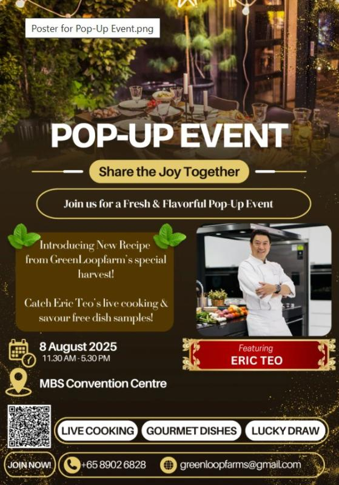
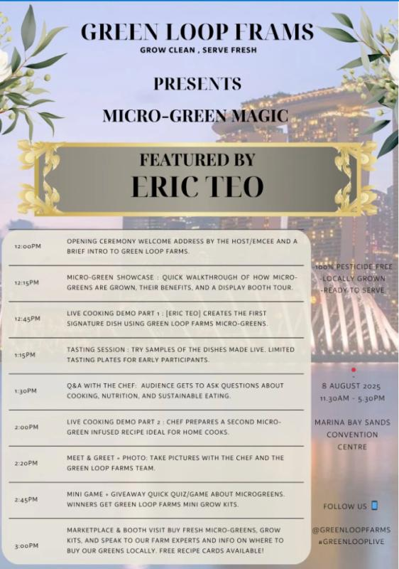
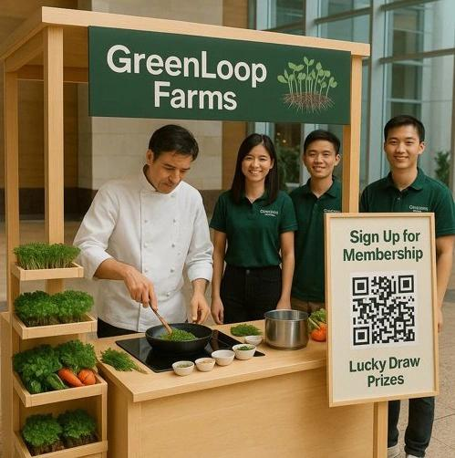

Worked in a team of 6 & used RPA to help our client (Stars Bridge Accounting Pte Ltd) to automate the following processes:
Robot 1: Invoice Creation Process on QuickBooks
Robot 2: Sending of Invoice Payment Reminders via WhatsApp and Email platform
Robot 3: Creation of Google Calendar Reminders
- Implementation is successful & Client is using the 3 robots in their business operations
- Presented our Initial Solution during the Interim Presentation & our Final Solution during the Final Presentation to our lecturer and client.
- Using Canva, we Created a Promotional Video & a Poster Infographic about our RPA Solution for Singapore Polytechnic to showcase to their future clients
Enterprise Innovation
- Led a team of 6 in transforming a business concept into functional prototypes.
- Helped our client (GreenLoopFarms) innovate a business prototype to help boost their B2B and B2C sales.
Our Prototype consists of the following:
- Pop Up Event Poster
- Programme Sheet
- 3D Model of Pop-Up Event
- 2 html. Websites (Popup Event Website & Membership Sign-up Website)



Entrepreneurship Business Prototype
Worked as a team of 5
Reused Coffee Grounds to make the following Coffee-Based Eco-Friendly Products:
- Coffee-Based Diffuser
- Coffee-Based Skincare
- Coffee-Based Scented Candles
Showcased our 3 Prototypes during Singapore Polytechnic's Entrepreneurship Gallery Walk 2024
Gave an elevator pitch to visitors of our booth (purpose is to introduce our prototype and spark interest in visitors)